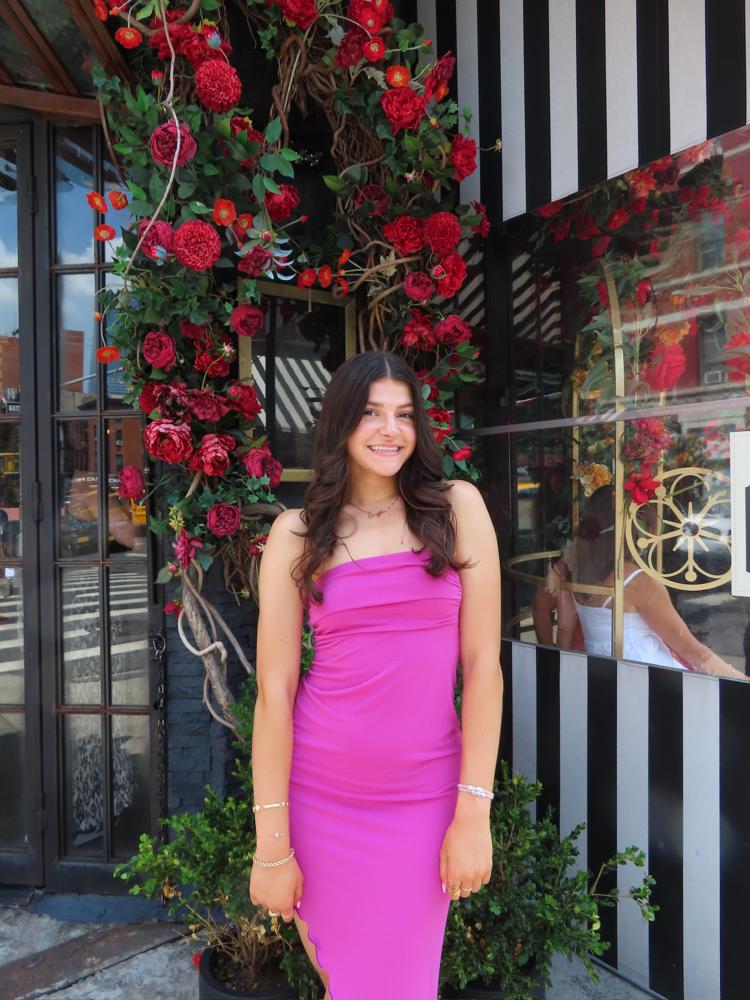

About Me
Born and raised in Westfield, NJ, Lleyton Beinhaker was the middle child of three. She was a competitive dancer since age three and has always had a creative soul. In high school, Lleyton was apart of her school's magazine and newspaper and worked as the front of Magazine Editor. She then went on to study at the University of Maryland where she is currently a third-year undergraduate studying Journalism whilst on a pre-medicial track. Lleyton hopes to one day go on to medicial school and become a Neonatologist.